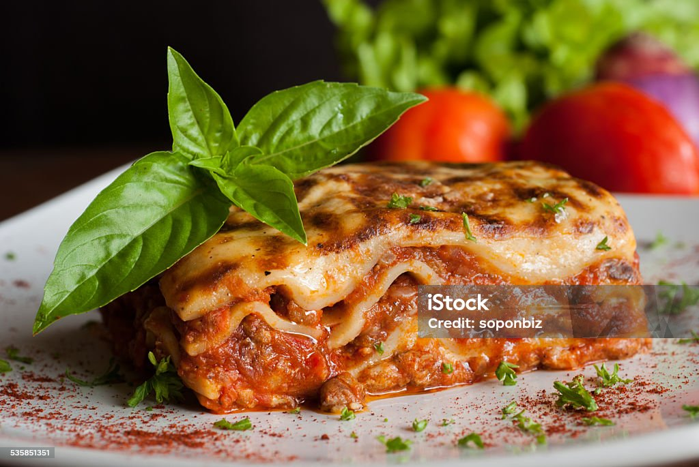

Lasagna Recipe

This classic lasagna recipe is a hearty and comforting dish that layers pasta, meat sauce, ricotta, and mozzarella cheese. Perfect for family dinners or meal prep!
Ingredients
- 12 lasagna noodles
- 2 tablespoons olive oil
- 1 pound ground beef
- 1 onion, chopped
- 2 cloves garlic, minced
- 1 can (28 ounces) crushed tomatoes
- 2 cans (6 ounces each) tomato paste
- 2 teaspoons dried basil
- 1 teaspoon salt
- 1/2 teaspoon black pepper
- 15 ounces ricotta cheese
- 1 egg
- 3 cups shredded mozzarella cheese
- 3/4 cup grated Parmesan cheese
Instructions
- Preheat oven to 375°F (190°C).
- Cook lasagna noodles according to package instructions; drain and set aside.
- In a large skillet, heat olive oil over medium heat. Add ground beef, onion, and garlic; cook until meat is browned.
- Add crushed tomatoes, tomato paste, basil, salt, and pepper. Simmer for 30 minutes.
- In a bowl, mix ricotta cheese with egg until well combined.
- Spread a layer of meat sauce in the bottom of a 9x13 inch baking dish. Layer 4 noodles over the sauce, then spread half of the ricotta mixture over the noodles. Sprinkle with 1 cup mozzarella cheese.
- Add another layer of meat sauce, followed by 4 more noodles, the remaining ricotta mixture, and another cup of mozzarella cheese.
- Add the final layer of meat sauce and top with remaining noodles. Sprinkle with remaining mozzarella and Parmesan cheese.
- Cover with aluminum foil and bake for 25 minutes. Remove foil and bake for an additional 25 minutes or until cheese is bubbly and golden brown.
- Let it cool for 10 minutes before serving.
This lasagna recipe serves about 8 people and is perfect for family gatherings or meal prep. Enjoy your delicious homemade lasagna!
To return to the home page click here